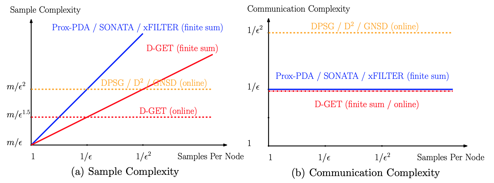
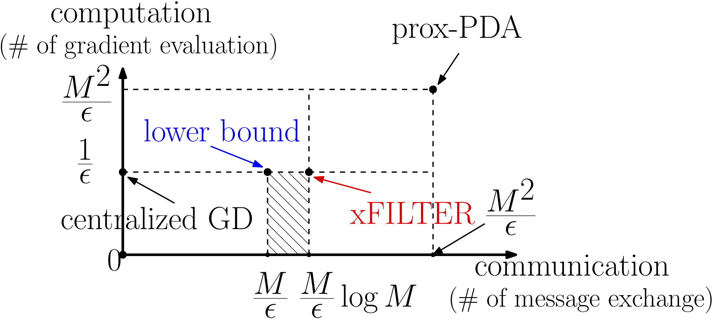
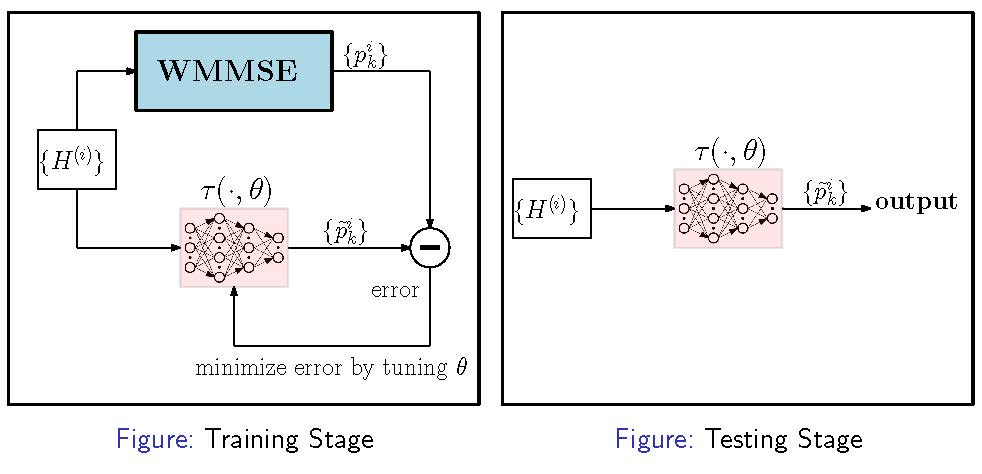

Haoran Sun
Haoran Sun ()Ph.D. Student Google Scholar Citation Research Interests
Email: sun00111@umn.edu
|
Short Bio
I am a Ph.D. student in the Department of ECE, University of Minnesota, working under the guidance of Prof. Mingyi Hong.
I received my M.S. degree from Department of IMSE, Iowa State University in July, 2017.
I received my B.S. degree from School of Automation, Beijing Institute of Technology in July, 2015.
Selected Publications
Haoran Sun, Songtao Lu, and Mingyi Hong, “Improving the Sample and Communication Complexity for Decentralized Non-Convex Optimization: A Joint Gradient Estimation and Tracking Approach”, accepted by International Conference on Machine Learning (ICML 2020), available at [arXiv].
|  | For a class of decentralized non-convex optimizations problems, this work aims both reducing the total communication rounds among the nodes while accessing the minimum number of local data samples. In particular, we propose an algorithm named D-GET, which jointly performs decentralized gradient estimation (which estimates the local gradient using a subset of local samples) and gradient tracking (which tracks the global full gradient using local estimates). The left figure illustrates that our D-GET algorithm significantly improves upon the best existing bounds in terms of both sample complexity and communication complexity. Note that there are m nodes in the system, and we treat the graph parameters such as eigengaps of Laplacian matrices as constants. |
Haoran Sun and Mingyi Hong, “Distributed Non-Convex First-Order Optimization and Information Processing: Lower Complexity Bounds and Rate Optimal Algorithms”, IEEE Transactions on Signal Processing (2019); available at [IEEE Xplore] [arXiv].
|  | This paper discusses the fundamental performance for distributed non-convex optimization, where multiple nodes collectively optimize some non-convex function using local data. For a class of non-convex problems, we develop an “optimal” distributed algorithm called xFILTER, in the sense that it achieves the best possible convergence rate for a class of first-order distributed algorithms. In the left figure, we illustrate the results derived in this paper (both the lower bound and xFILTER bound), by comparing them with the rates of an non-optimal D-GPDA method, and the centralized gradient descent (GD) methods (over a path graph with M nodes, to achieve certain -solution). The xFILTER can significantly reduce both # of gradient evaluations, and # of communication rounds among the distributed nodes. A short version of this paper won the Best Student Paper Award in 52nd Asilomar Conference on Signals, Systems, and Computers (Asilomar), October 2018. available at [IEEE Xplore]. |
Haoran Sun, Xiangyi Chen, Qingjiang Shi, Mingyi Hong, Xiao Fu and Nikos D. Sidiropoulos, “Learning to Optimize: Training Deep Neural Networks for Wireless Resource Management”, IEEE Transactions on Signal Processing 66.20 (2018): 5438-5453; available at [IEEE Xplore] [arXiv] [code].
|  | This paper address both the theoretical and practical aspects of deep learning based algorithm approximation with applications to wireless resource management. The key idea is to treat the input and output of an SP algorithm as an unknown nonlinear mapping and use a deep neural network (DNN) to approximate it. If the nonlinear mapping can be learned accurately by a DNN of moderate size, then SP tasks can be performed effectively — since passing the input through a DNN only requires a small number of simple operations. Prof. Nikos Sidiropoulos (ECE at University of Virginia) gave a Keynote at ICC Workshop ‘‘Machine Learning for Communications’’ about this paper. See the slides here. The IEEE Communications Society (ComSoc) has provided a list of papers for “Best Readings in Machine Learning in Communications”. This paper is included in this list for ‘‘resource allocation’’. |
Qingjiang Shi, Haoran Sun, Songtao Lu, Mingyi Hong and Meisam Razaviyayn, “Inexact Block Coordinate Descent Methods For Symmetric Nonnegative Matrix Factorization”, IEEE Transactions on Signal Processing 65.22 (2017): 5995-6008; available at [IEEE Xplore] [arXiv] [code].
Address the SNMF problem by proposed simple inexact block coordinate decent methods with guaranteed convergence to stationary solutions.